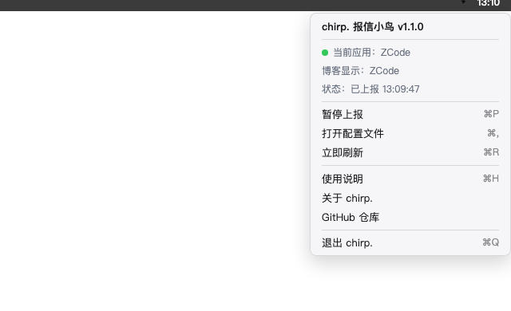

把你正在使用的软件实时报到博客。纯 AppKit，零依赖，约 200KB，开机自启——访客打开你的页面，导航栏上就是一行实时的「正在使用 XX」。
curl -fsSL https://raw.githubusercontent.com/poboll/chirp/main/scripts/install.sh | bash
上游 ProcessReporter 的功能砍到只剩一件事——报信。没有 Slack、没有 Discord、没有 S3，换来极小与极稳。
纯 AppKit + Swift Package，零第三方依赖；LSUIElement 无 Dock 图标，只住菜单栏。
只在应用切换时上报（3 秒防抖），每 4 分钟心跳续期；服务端缓存 5 分钟。
LaunchAgent KeepAlive 常驻；睡眠唤醒自动补报；失败小鸟变红；配置损坏绝不覆盖。
三层自动回落，新装软件零操作（见 图标从哪来）。
防抖、心跳、回落，全部自动。你唯一要做的是装上它、填两行配置。
macOS 13+（Apple Silicon）。先在 mx-space 后台备好 ps/update fn snippet（Shiro 生态自带）。
curl · release · launchagent
密钥只落本机 · 600 权限 · 不经 GitHub
不传参数也行：装好后点菜单栏小鸟 → 打开配置文件（⌘,）手动填。
swift package · 两行
「正在使用」的应用图标按三层回落，绝大多数应用不需要任何手动配置——新装软件即刻有图标。
Shiro/Yohaku 自带 Innei reporter-assets 名称映射，Xcode、VS Code 等开发软件直接命中。
poboll/app-icons 的 manifest（约 240 个常见 macOS 应用）映射成 jsdelivr 图标直链上报，manifest 每日自动刷新。
两层都未命中时直接抓本机应用图标内嵌上报——新装任何软件立即可用，进了图标库后自动切轻量 CDN 模式。
三步：服务端建一个函数 → 主题开「正在使用」→ 小鸟填两行配置。全程约五分钟。
ps/update 函数mx-space 管理后台 → Serverless 函数 → 新建
路径填 ps/update，Method 选 POST，粘贴下面这段（把 YOUR_SECRET_KEY 换成你自己的强随机密钥）：
Shiro / Yohaku 主题配置
主题配置里把活动模块的端点指向这个函数（Yohaku 示例）：
保存后导航栏就会出现「正在使用 XX」实时徽标，右侧小字是在读人数。
endpoint + key，密钥只落本机
一个函数，两个分支：带 process 的 POST 是上报（要密钥），空 body 的 POST 是读取（公开，给主题用）。
| 调用 | 鉴权 | 行为 |
|---|---|---|
POST body 含 process / media | 必须 key 匹配，否则 401 | 写入缓存；应用名变化时经 WebSocket 广播 ps-update |
POST 空 body | 公开 | 返回当前缓存（{code:200, data:{processName, processInfo, mediaInfo}}） |
上报 payload（chirp 自动组装，无需手写）：
服务端缓存当前应用 5 分钟（media 10 秒），心跳 4 分钟一轮保证不过期。
应用名没变不打扰 WebSocket；变了才推 ps-update 事件给所有在线访客。
注意：函数以 POST 注册，直接 GET 会 404 FUNCTION_NOT_FOUND——读取也用空 body POST。
一个共享密钥，两处存放，三不原则。
chirp 配置里的 key 必须与 snippet 内 AUTH_KEY 一致；不匹配一律 401。这是唯一凭证。
本机 ~/.config/chirp/config.json（权限 600）与 snippet 源码。绝不进 Release、仓库或截图。
后台改 snippet 里的 AUTH_KEY → 本机同步改配置 → ⌘R 立即刷新。旧 key 即刻失效。
「正在使用」是给访客看的，读分支无需鉴权；上报分支必须持密钥，防伪造刷屏。
配置文件位于 ~/.config/chirp/config.json，权限保持 600。
| 字段 | 默认 | 说明 |
|---|---|---|
endpoint | 必填 | ps/update fn snippet 的完整地址 |
key | 必填 | 与 snippet 一致的密钥 |
debounceSeconds | 3 | 应用切换防抖，避免频繁切换刷屏 |
heartbeatSeconds | 240 | 心跳续期间隔（服务端缓存 5 分钟，须小于它） |
iconManifestUrl | app-icons CDN | 应用名 → 图标映射清单，每日自动刷新 |
iconBase | app-icons CDN | 图标 URL 前缀；未命中自动回落 data URI |
菜单栏小鸟：单击看「当前应用 / 博客显示 / 上次上报结果」，⌘P 暂停 · ⌘R 刷新 · ⌘, 配置 · ⌘H 本页。